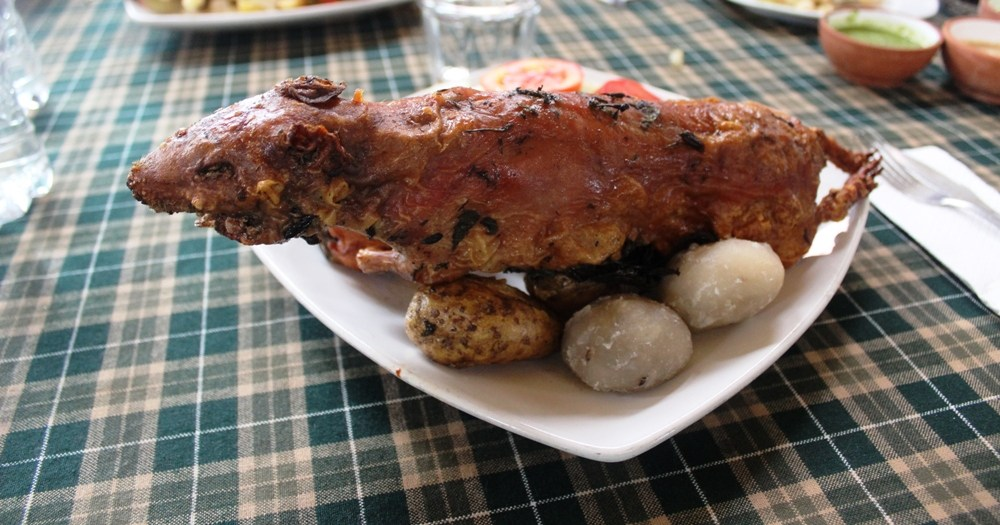

Cuy al horno
16/01/2018

En Bolivia, en la zona andina del departamento de Nariño en Colombia, Ecuador y el Perú se crían razas de carne de este roedor para el consumo popular, utilizadas en diversas preparaciones culinarias en estos países. Gastrónomos famosos lo consideran un manjar.Se cree que posee niveles elevados de omega 3.[cita requerida] Además, su carne posee un alto valor nutritivo: poca grasa (solo 7.6 %) y mucha proteína (20.3 %). Hay dos razas principales de cuy para alimentación, además de varias líneas.
Raza Perú
Se caracteriza por tener buena conformación cárnica, ser precoz (es decir, tiene un rápido crecimiento o engorde) y ser poco prolífica. Sus colores son rojo y blanco.
Raza Andina
Se caracteriza por tener buena conformación y ser prolífica, pero menos precoz que la raza Perú. Son de color blanco puro y de ojos negros.
Línea Inti
Se caracteriza por ser un promedio de las dos razas anteriores. Es un animal más forrajero y sus colores son amarillo o bayo con blanco.
Usuario1
I'm going to improvise. Listen, there's something you should know about me... about inception. An idea is like a virus, resilient, highly contagious. The smallest seed of an idea can grow. It can grow to define or destroy you.
Usuario2
I'm going to improvise. Listen, there's something you should know about me... about inception. An idea is like a virus, resilient, highly contagious. The smallest seed of an idea can grow. It can grow to define or destroy you.
Tamales de Pipián
09/11/2017

El Tamal de Pipián es típico de Popayán(Cauca), se diferencia de los demás no solo por su tamaño mas pequeño sino también porque su ingrediente principal es una mezcla típica de la región llamado de la misma forma: Pipián, cuyo ingrediente principal es la papa y se debe preparar antes empezar a armar los tamales.
Antes de la preparación de los tamales de pipián, voy a dejar la receta de la preparación del pipián, que también se utilizará para otras recetas típicas de Popayán.
Ingredientes para el Pipián
- 1 libra de papa colorada mediana
- 1 Tallo de cebolla larga
- 1 Cebolla cabezona o cebolleta
- 2 dientes de ajos
- Aceite vegetal
- Color o achiote
- Canela
- Maní